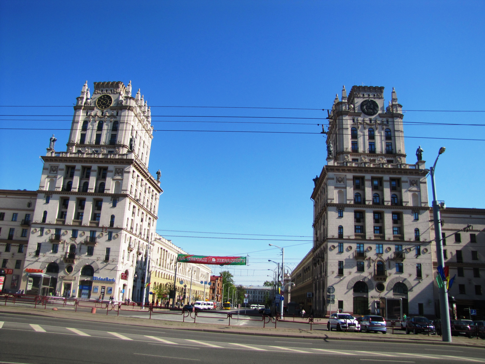
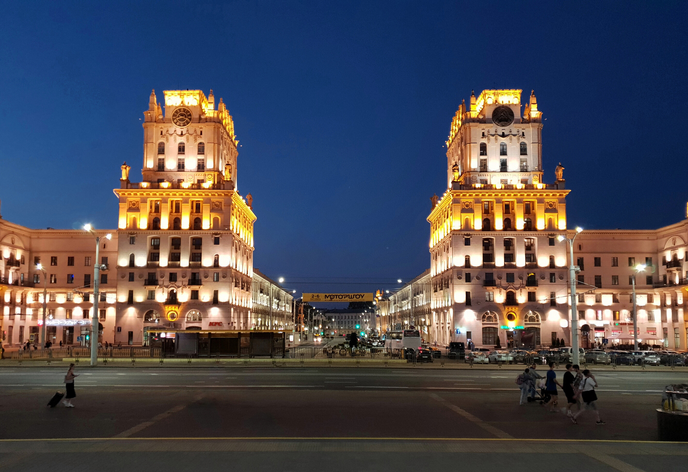

топ мест
| название | место |
|---|---|
| Парк Горькогo | 1 место |
| Костёл Святых Симеона и Елены | 2 место |
| Ворота Минска | 3 место |
Ворота Минска


Архитектурный комплекс на Привокзальной площади. Представляет собой два 11-этажных здания-башни по углам 5-этажных домов, расположенных симметрично относительно поперечной оси площади (здание вокзала — улица Кирова).
Некоторые особенности:
Построены в 1953 году в стиле сталинского ампира.
На одном здании установлены трофейные немецкие часы с диаметром циферблата 3,5 м, на другом — литой герб Белорусской ССР.
Башни украшают скульптуры партизанки, колхозницы, инженера и солдата. В период 1972–1975 годов скульптуры были демонтированы из-за износа материала (бетона), но в 2004 году восстановлены из более лёгкого и прочного материала (силумина).
Костёл Святых Симеона и Елены
.webp)
.webp)
Католический храм, часто называемый также Красным костёлом.
Некоторые особенности:
Построен в 1910 году из красного кирпича.
Представляет собой пятинефную, трёхбашенную базилику асимметричной объёмно-пространственной композиции.
Ядром архитектурной композиции является 50-метровая прямоугольная четырёхъярусная башня в юго-восточной части.
Две шатровые малые башни костёла поставлены не на главном фасаде, а по бокам алтарной части.
Парк Горькогo
.webp)
.webp)
Некоторые особенности:
Расположен в центре города, рядом с Республиканским дворцом культуры и Монументом Победы, на левом берегу реки Свислочь.
На площади в 28 гектаров раскинулись живописные аллеи, ухоженные клумбы и многочисленные зоны для отдыха и развлечений.
Здесь можно встретить редкие породы деревьев, покормить уток и белок. На территории парка расположен Минский планетарий, где можно посмотреть звёздные шоу и познавательные программы о космосе.